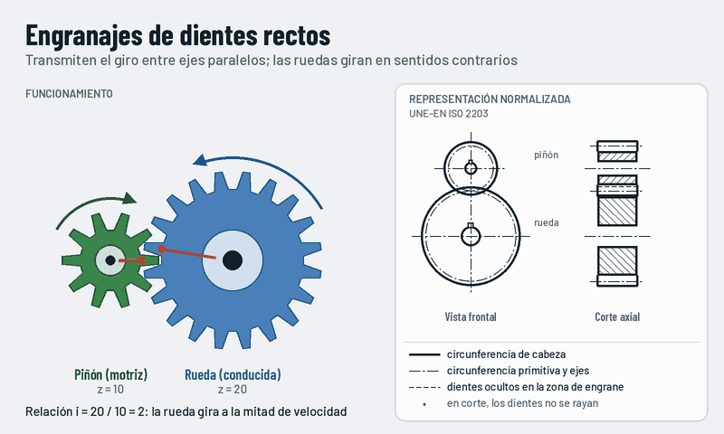

Engranajes de dientes rectos
Dos ruedas dentadas con los dientes paralelos al eje transmiten el giro entre ejes paralelos. Giran en sentidos contrarios y la más pequeña, el piñón, gira más deprisa.

Qué observar
- Las dos ruedas giran en sentidos contrarios.
- El piñón de 10 dientes da dos vueltas por cada vuelta de la rueda de 20.
- Las circunferencias primitivas ruedan una sobre otra sin deslizar.
Cómo se representa
- Circunferencia de cabeza: línea continua gruesa.
- Circunferencia primitiva: línea fina de trazo y punto.
- Circunferencia de pie: no se dibuja en vista; en corte, línea gruesa.
- En corte axial los dientes no se rayan y, en el engrane, los de una rueda se dibujan ocultos.
La cuenta
i = z₂ / z₁ = n₁ / n₂
z es el número de dientes y n la velocidad de giro.
Con z₁ = 10 y z₂ = 20, i = 2: si el piñón gira a 1400 rpm, la rueda gira a 700 rpm.
Dónde lo encontramos
- Cajas de velocidades de máquinas herramienta.
- Relojes y mecanismos de precisión.
- Reductores sencillos.